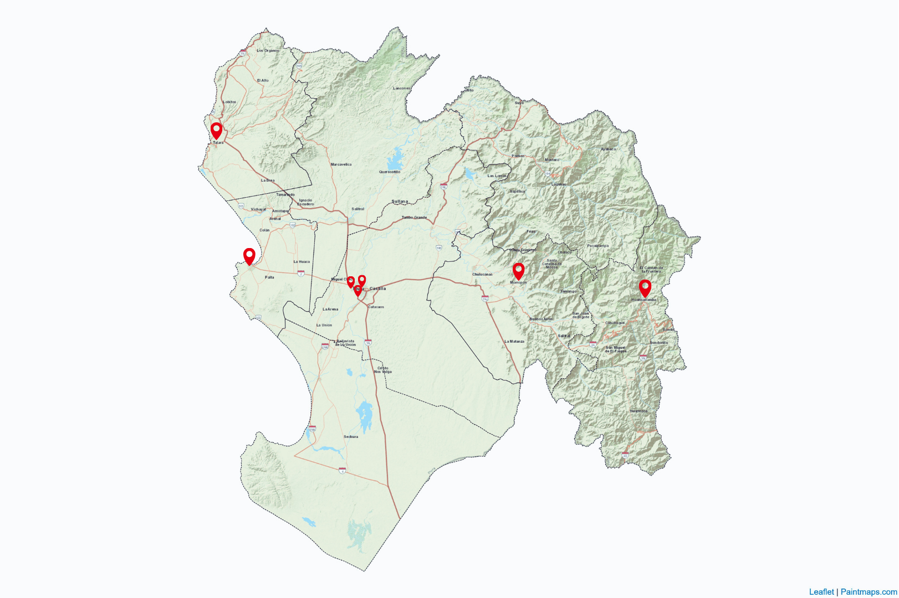

Inicio
Calidad del aire
Mapas
Contacto
Monitoreo de calidad del aire en Piura

Loading PurpleAir Widget...
Loading PurpleAir Widget 2...
Loading PurpleAir Widget 3...
Loading PurpleAir Widget 4...
Loading PurpleAir Widget...
Loading PurpleAir Widget 6...
Loading PurpleAir Widget 7...